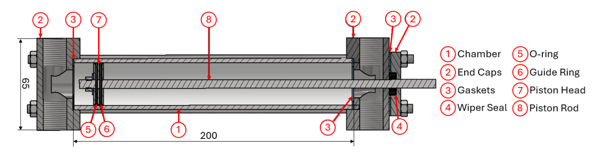
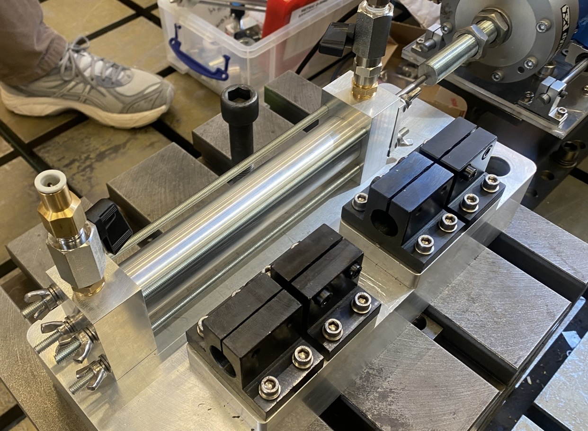
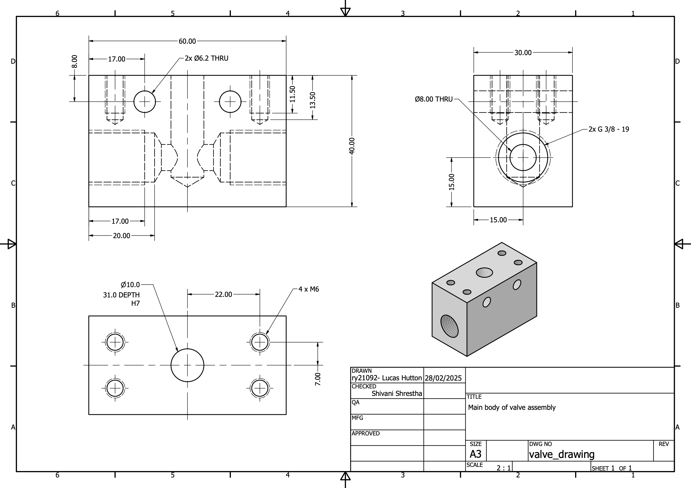
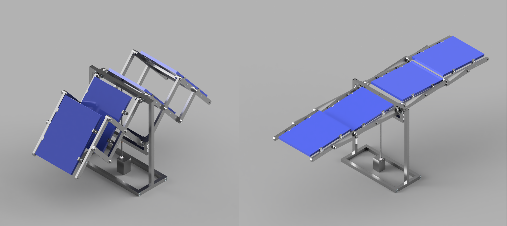
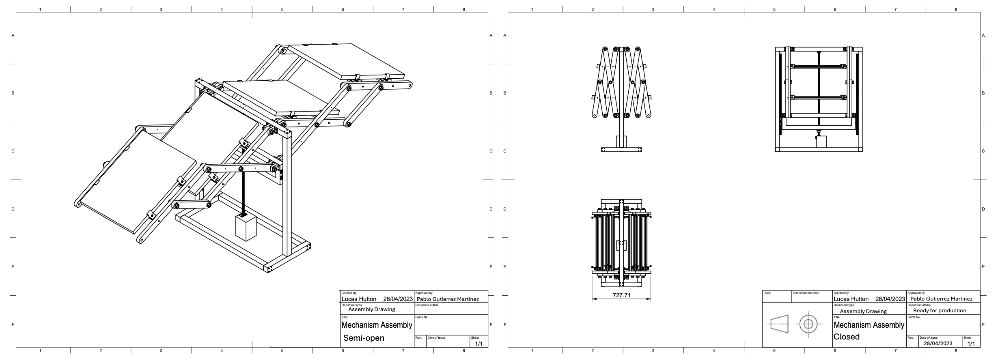
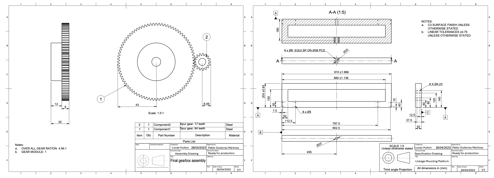

CAD Experience
Component Design for Variable Damper project
Bespoke design and manufacture of multiple components was required to achieve the desired dynamic behaviour. I ensured components were designed for manufacture and assembly, and were safely specified for pressure, flow, and sealing requirements.
Here is an example of a custom hydraulic piston assembly which was designed in CAD and manufactured by the University of Bristol Machine Shop.
It was rewarding when the piston was assembled and functioned as intended, effectively sealing the hydraulic fluid and transferring input force into reliable pressure difference across the chambers.
Below are the techincal drawings for the custom valve casings which created the variable damping within the hydraulic system. Active communication with the manufacturing team was necessary to ensure the components were detailed according to ISO-128 and ISO 286-2 and compatible with the manufacturing operations available within the shop floor.
Portable Solar Power Deployment Mechanism
This project involved designing a deployable solar array system that could be retrofitted to a flatbed truck, enabling rapid off-grid renewable power generation in remote or infrastructure-limited environments. Potential applications include disaster relief operations, remote construction sites, and desert deployments where reliable electrical power is otherwise difficult to access.
The full engineering design process was followed, progressing from concept generation through iterative design refinement to a final manufacturable assembly. A key objective was balancing compact stowage during transport with maximum solar panel coverage once deployed, while keeping mechanical complexity manageable.
Design decisions were guided by a detailed Problem Design Specification (PDS), which translated the project requirements into quantifiable constraints and performance targets. Vehicle payload limits, available flatbed dimensions, and operational stability considerations all informed the final system layout.
Below is a render of the completed CAD assembly showing the deployment sequence from initial opening through to full extension.
Analytical hand calculations were carried out to verify structural integrity of the linkage system, including buckling, tension, and compression loading cases. Appropriate safety factors were used under both static conditions and dynamic loading during deployment and transport.
The animation below shows the kinematic behaviour of the unfolding linkage mechanism, produced during development to validate motion, clearances, and deployment feasibility.
All components were designed with manufacturability in mind and documented through detailed technical drawings. This included the lead-screw actuation system, gearbox integration, and associated structural components. Full assembly and sub-assembly drawings were produced to support fabrication and system integration.
 